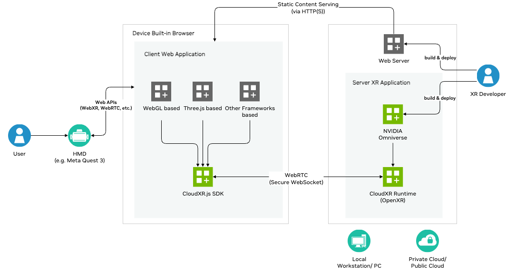

NVIDIA Omniverse Spatial Streaming is an architectural framework enabling the network-based transmission of high-fidelity USD (Universal Scene Description) digital twin representations to extended reality (XR) endpoints, such as the Meta headset. This framework facilitates the development of interactive workflows by integrating the Omniverse platform with the CloudXR.js SDK, specifically designed to support real-time, immersive XR rendering, precise spatial acuity, and direct hand tracking for 3D content manipulation within the streamed environment.
It provides a robust solution for immersive digital twin experiences, enabling high visual fidelity and interactive responsiveness. This technology optimizes development through low-latency, GPU-accelerated streaming of 3D asset data, which is critical for applications requiring millisecond-level motion-to-photon latency, accurate spatial awareness, and precise hand-tracking. This allows developers to engineer seamless, performant, and engaging interactive workflows. Practical applications include architecture and construction, where architects can create detailed digital twins for immersive client walkthroughs, and industrial training, offering realistic simulations for enhanced learning and safety.

In these workflows, a Meta Quest 3 headset captures operator head and hand motion through the browser's immersive web capabilities. The browser sends this data to Omniverse Kit, which renders and submits stereo views of the USD scene to the streaming pipeline. Omniverse then encodes and streams the rendered views back to the Meta headset for display in real time using a low-latency, GPU-accelerated pipeline.
Before diving into this guide, developers should have a basic understanding of the following:
Prior to using Omniverse Spatial Streaming with Meta headset, please review the following system requirements:
Meta Quest 3
Omniverse runs on Windows and Linux-based PCs and requires an NVIDIA GPU to run. We recommend Windows 11 or Ubuntu 24.04 for developing and authoring your Meta Quest 3 experiences.
Minimum System Requirements:
| Component | Requirement |
|---|---|
| CPU | AMD Ryzen 16C/32T Threadripper Pro 5955WX 16-Cores (Zen3) |
| GPU | 1x NVIDIA RTX Pro 6000 Blackwell or equivalent (3x encoder w/ AV1 for Meta Quest 3 streaming) |
| RAM | 128 GB DDR4 Dual Rank (preferred: 8 x 16 GB, also compatible with 4 x 32 GB) |
| Boot Disk | 1-2 TB M.2 NVMe |
| Network Interface Card | Any NIC supporting 1000 Mbps speeds |
| Router | WiFi 6 capable (see Networking Setup) |
| UDP Ports (Firewall Rules) | 47998, 47999, 48000, 48005, 48008, 48012 (see Networking Setup) |
| TCP Ports (Firewall Rules) | 49100 (see Networking Setup) |
The following software is required:
| Software | Version |
|---|---|
| Workstation OS | Windows 10 / Windows 11 / Ubuntu 22.04 / Ubuntu 24.04 |
| Omniverse Kit SDK | 109.0.2 or newer (includes integrated CloudXR 6 WebRTC runtime) |
| NVIDIA Driver | See this guide for driver requirements |
| VS Code or similar IDE |
For developing a web application for Meta Quest 3, we recommend you to use the same Omniverse workstation with the following software.
| Software | Version |
|---|---|
| Meta Quest 3 OS | 79 or later |
| Chromium-based browser (e.g. Google Chrome) | M125 or newer |
| Node.js | v20.19.5 or newer |
| VS Code or similar IDE |
If you encounter issues, please see Troubleshooting.